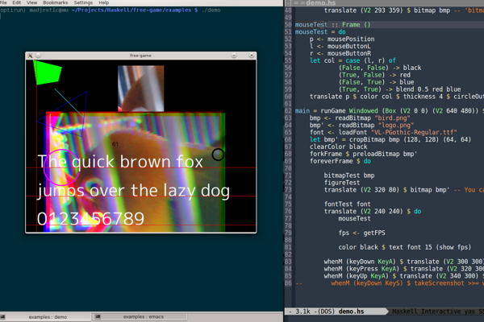

free-game
A little gem I found on the way and wish to share with everybody who is in a similar situation.
“free-game gives you a world so that you can create games easily.”
If you, like me, have been looking for a graphics library and you are obsessive-compulsive about minimalism and bloat-ware, than chances are, like me, you can’t stand the idea of relying on GLOSS as a graphical backend of your project, than you may be delighted to find out that there’s something out there that is small, fresh, readable, that may be just enough for whatever graphics project you may have in mind: free-game

It’s minimal, here’s the list of dependencies:
array >= 0.4,
base == 4.*,
colors == 0.1.*,
containers >= 0.4,
control-bool,
directory >= 1.0,
filepath >= 1.3,
free >= 4.6.1 && < 5,
freetype2 >= 0.1,
GLFW-b >= 1.3 && <2,
hashable >= 1.2,
JuicyPixels,
JuicyPixels-util == 0.1.*,
linear >= 1.0 && < 2,
mtl >= 2.1,
OpenGL == 2.9.*,
OpenGLRaw == 1.4.*,
random == 1.*,
reflection == 1.*,
template-haskell,
transformers >= 0.3,
vector >= 0.9 && <0.12,
void >= 0.5,
boundingboxes >= 0.2 && < 0.4,
lens >= 3.8 && < 5
Here’s, for comparison sake, the list of dependencies for NGL:
base == 4.*,
GLFW-b >= 1.3 && <2,
OpenGL == 2.9.*,
OpenGLRaw == 1.4.*,
bytestring >= 0.10.0.2(yes it’s less, but NGL is not doing anything besides drawing colorful triangles, yet )
The total amount of lines of code of Free-Game is 1727 lines (including white-space). Pretty impressive tight code base that supports:
drawing primitives (lines and shapes)
textures
animation
anti-aliasing and filtering
font-rendering
input-handling (user-event system)
All in tight 100Kb of code, brought to you by Fumiaki Kinoshita